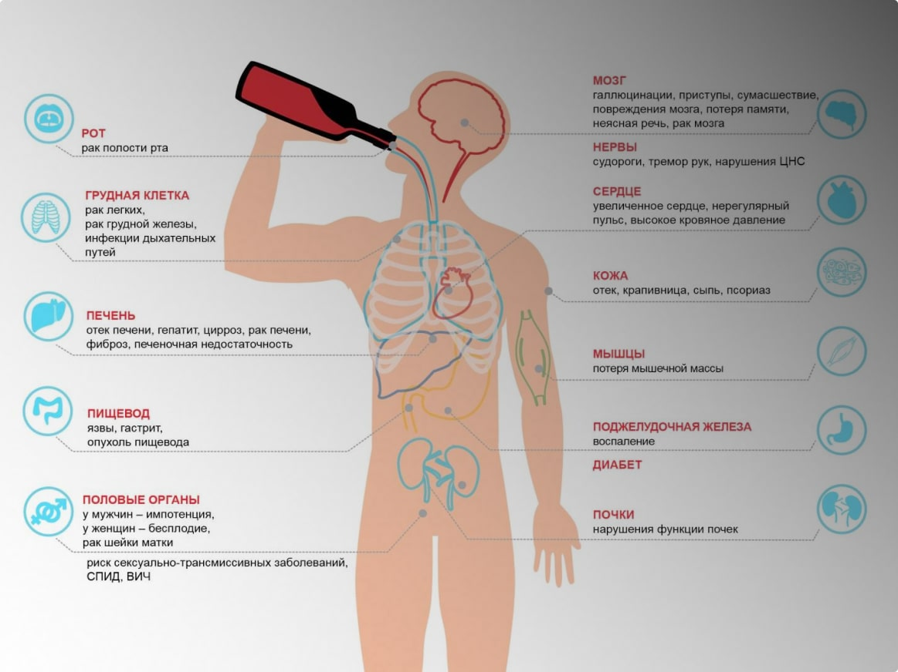

Содержание статьи:
Состояние зависимости от алкоголя, когда он начинает определять жизнь человека и разрушать её, называется алкоголизмом. Эта патологическая тяга к спиртным напиткам – серьёзное психическое заболевание, к которому нужно относиться как к болезни, а не как к слабости характера или другим предрассудкам. Аддикции подвержены мужчины и женщины, патология может развиться уже в подростковом возрасте.
Почему спиртное так популярно
Алкоголь – часть культуры многих стран. Многие его употребляют, но лишь некоторые становятся зависимыми от напитка. Как возникает алкогольная зависимость, до сих пор чётко не объяснено. Генетические и психосоциальные влияния играют важную роль в развитии алкоголизма, но по мере изучения патологии учёные открывают новые факторы зависимости от этанола. Ранее болезнь называлась этилизмом.
Алкоголь, также как пища, увеличивает выброс нейротрансмиттера дофамина, который активирует систему вознаграждения в мозге, вызывает чувство счастья. Только активация дофаминовых рецепторов во время еды намного слабее, чем при приёме спиртного. Более того, алкозависимые становятся менее чувствительными к дофамину, поэтому их задача увеличивать дозу, частоту приёма, чтобы испытывать первоначальные ощущения. В результате формируется патологическая тяга, далее устойчивая зависимость – злоупотребление. Окончание цепочки – алкоголизм, с трудом поддающийся лечению.
Как перестать пить
Цель алкогольной терапии – воздержание от спиртного. Тип лечения обычно выбирается индивидуально. Врач решает, какой терапевтический метод больше подходит конкретному пациенту исходя из клинической картины, анамнеза, сопутствующих патологий. Наиболее эффективно комплексное лечение. Поскольку алкоголь вызывает как физическую, так и психологическую зависимость, терапия требует проработки на всех уровнях:
- медикаментозное лечение – аверсивные методы запретительной терапии;
- психотерапевтическое воздействие;
- реабилитация;
- социальная адаптация пациента.
Важно поочерёдно пройти все этапы, т. к. психологическая зависимость быстро приводит к рецидиву. Одной «таблеткой» не обойтись.
Проводить полный лечебный курс лучше в стационаре. Амбулаторные процедуры допустимы только на ранней стадии зависимости. При запущенном алкоголизме они бесполезны. Самолечение вредно: не получится и опасно, если у пациента уже происходят физиологические изменения в организме. Вызов врача на дом полезен в случаях, когда требуется наркологическая помощь при:
- тяжёлом похмельном синдроме;
- выводе из запоя;
- абстинентном синдроме;
- алкогольном психозе, развивающемся на фоне абстиненции.
Только единовременный вызов нарколога на дом не обеспечит долгосрочной ремиссии, рецидив обязательно наступит, особенно при хроническом алкоголизме, либо быстром прогрессировании болезни. Поэтому рекомендуется обращение в наркологическую клинику для лечения.
Признаки и симптомы алкоголизма
Периодический приём спиртных напитков, даже разовые случаи «ударной дозы» ещё не означают наличие алкоголизма. Переход от нормального употребления к злостному происходит плавно, требует времени. Человек обычно не осознаёт своей зависимости, либо задумывается о лечении, когда время упущено, в организме происходят изменения. Обычно первыми начинают бить тревогу родные, когда замечают физические симптомы, изменения в поведении алкозависимого.
На патологическое пристрастие указывают шесть основных признаков. Достаточно присутствия трёх в течение одного года, чтобы предположить алкогольную зависимость, обратиться за профессиональной помощью. Раннее обращение к врачу-наркологу позволит своевременно предотвратить вред. Точный диагноз может быть поставлен только с помощью медицинского освидетельствования.
Шесть признаков алкогольной зависимости
Сильная тяга. Неудержимое влечение к спиртному – центральный признак зависимости. Человек не мыслит отсутствие алкоголя, желает его по поводу и без. Он находит аргументы для того, чтобы выпить при встрече с друзьями, на футбольном матче, с соседями у подъезда. Нормы морали постепенно замещаются самооправданиями своих поступков.
Потеря контроля над употреблением. Приём алкоголя становится спонтанным:
- он принимается с раннего утра, поздним вечером, ночью;
- приём спиртного на работе, в общественных местах, где это запрещено;
- приём алкоголя допускается перед управлением транспортного средства, во время него;
- человек может выпить при уходе за малолетними детьми, т. д.
Алкозависимый полностью теряет контроль над своей тягой к спиртному.
Развитие толерантности к алкоголю. При чрезмерном употреблении в организме развивается физическая толерантность к нему – тело привыкает к повышенной концентрации этанола. Для того чтобы уже необходимый эффект алкоголя продолжался, требуется выпивать больше, чаще.
Физические симптомы абстиненции. При отсутствии очередной алкогольной дозы, либо при резком прекращении пить по разным причинам, развиваются тяжёлые симптомы абстиненции, которые могут стать невыносимыми без медицинского вмешательства.
Пренебрежение другими интересами. Пренебрежение важными обязанностями, работой, семьёй, хобби, которое раньше доставляло удовольствие. Время, затрачиваемое на поиск алкоголя, увеличивается.
Постоянное употребление алкоголя, несмотря на последствия. Даже если систематический приём алкоголя уже привёл к вредным последствиям зависимого, он не может прекратить его употребление.
Помимо шести основных симптомов, алкоголизм проявляется и другими признаками:
- приём спиртных напитков происходит уже не для удовольствия, а из-за физической потребности;
- попытки принять помощь, сократить употребление спиртного чаще терпят неудачу;
- алкоголик отрицает свою зависимость, скрывает своё пристрастие.
Пациент часто убеждён, что может бросить пить, если захочет, но при неудачных попытках находит оправдания, чтобы не признавать своё бессилие.